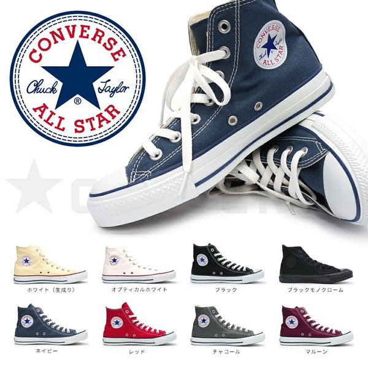
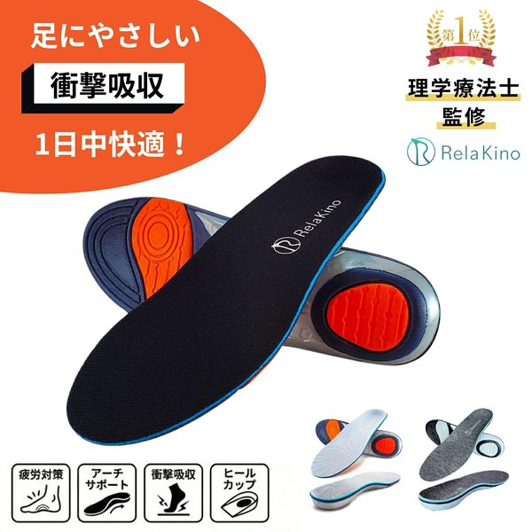
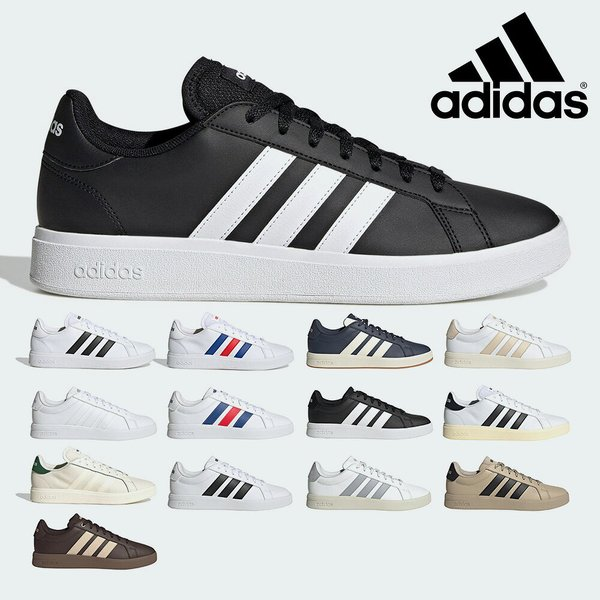
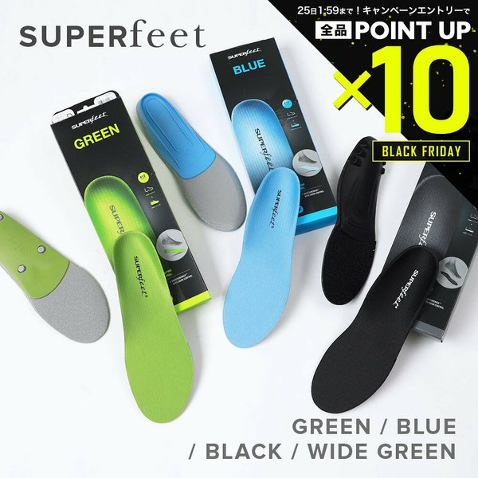
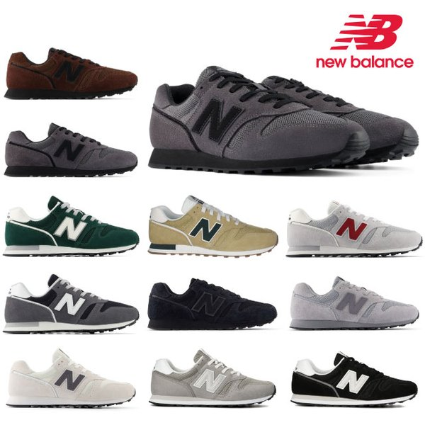
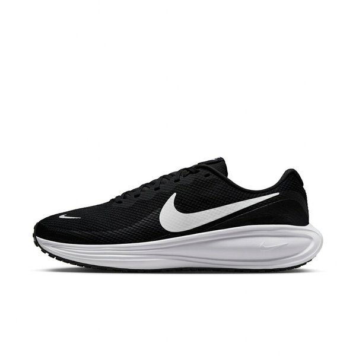
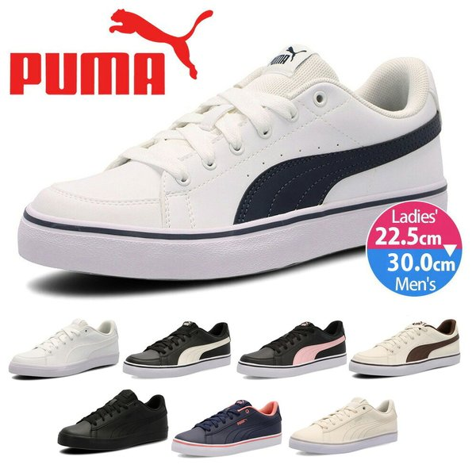
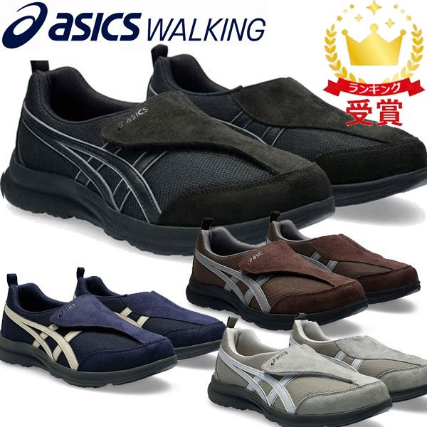
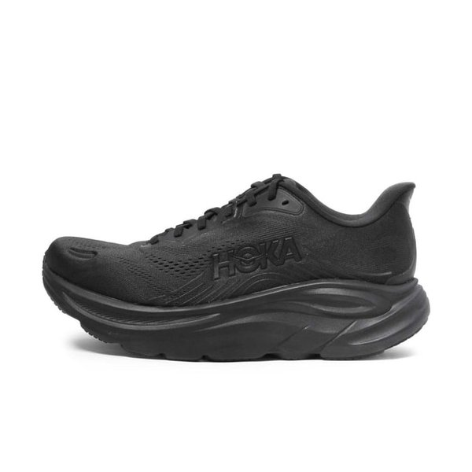

【2026年ブラックフライデー】歩くのがラクになる｜定番スニーカー・ウォーキングシューズ・神インソール10選
足の疲れは、靴で決まります。同じ距離を歩いても、クッションのある靴とそうでない靴では、帰宅したときの脚の重さが違います。ブラックフライデーは、定番モデルが1年でいちばん下がる時期です。
選ぶ軸は、歩く距離、足の幅、そして靴の中を調整できるかの3つです。通勤で1日8,000歩歩くなら、クッションのある厚底か、ワイド設計のランニング系。幅広・甲高の足なら2E・3Eのモデルを選ぶと窮屈になりません。手持ちの靴を変えずに疲れを減らしたいなら、インソールを入れるのがいちばん安く済みます。姿勢サポート系、衝撃吸収系、アーチ保持系で効果が違うので、つらい場所に合わせて選んでください。
本記事では、楽天市場で人気・高評価の定番スニーカー・ウォーキングシューズ・インソール10選を、実売価格とレビュー評価つきで写真付き紹介します。
- おすすめ10選 スペック・特徴比較表
- BEST 1｜ピットソール 正規品 インソール（姿勢サポート・アーチサポート）
- BEST 2｜キャンバス オールスター HI ハイカット（メンズ・レディース）
- BEST 3｜Rela Kino インソール 理学療法士監修（衝撃吸収・アーチサポート）
- BEST 4｜グランドコート ベース 3.0（メンズ・レディース・レギュラーフィット）
- BEST 5｜スーパーフィート インソール All-Purpose（グリーン／ブルー／ブラック）
- BEST 6｜ニューバランス 373（U373／M373／ML373・ユニセックス）
- BEST 7｜ナイキ レボリューション 8 ワイド（メンズ・2E相当）
- BEST 8｜Vコート バルク（V Court Vulc・メンズ／レディース）
- BEST 9｜asics ライフウォーカー W010（ウォーキングシューズ・3E相当ワイド）
- BEST 10｜ホカ クリフトン 11 ワイド（メンズ・2E・ランニングシューズ）
- 【読者負担0円】買わなくても得する無料サービス
- まとめ：スニーカー・ウォーキングシューズ10選の選び方
| 順位 | 商品名 | ブランド | 最大の特徴・おすすめ理由 | 総合評価 |
|---|---|---|---|---|
| BEST 1 | ピットソール 正規品 インソール（姿勢サポート・アーチサポート） | ピットソール（PIT SOLE） | 履くだけで姿勢を支える設計 | 4.00 |
| BEST 2 | キャンバス オールスター HI ハイカット（メンズ・レディース） | コンバース（CONVERSE） | 足首まで覆うハイカット | 4.74 |
| BEST 3 | Rela Kino インソール 理学療法士監修（衝撃吸収・アーチサポート） | Rela Kino | 理学療法士監修 | 4.56 |
| BEST 4 | グランドコート ベース 3.0（メンズ・レディース・レギュラーフィット） | アディダス（adidas） | スラックスにも合うすっきり形 | 4.58 |
| BEST 5 | スーパーフィート インソール All-Purpose（グリーン／ブルー／ブラック） | スーパーフィート（SUPERfeet） | 硬めのサポートでアーチを保持 | 4.71 |
| BEST 6 | ニューバランス 373（U373／M373／ML373・ユニセックス） | ニューバランス（new balance） | 574ベースの軽量モデル | 4.71 |
| BEST 7 | ナイキ レボリューション 8 ワイド（メンズ・2E相当） | ナイキ（NIKE） | 幅広・甲高でも入るワイド設計 | 4.64 |
| BEST 8 | Vコート バルク（V Court Vulc・メンズ／レディース） | プーマ（PUMA） | 22.5〜30.0cmのサイズ展開 | 4.58 |
| BEST 9 | asics ライフウォーカー W010（ウォーキングシューズ・3E相当ワイド） | アシックス（asics） | 3E相当のワイド設計 | 4.83 |
| BEST 10 | ホカ クリフトン 11 ワイド（メンズ・2E・ランニングシューズ） | ホカ（HOKA） | 厚底クッションで衝撃を吸収 | 4.95 |
ピットソール 正規品 インソール（姿勢サポート・アーチサポート）

履くだけで姿勢を支える設計のインソール。土踏まずのアーチを下から持ち上げ、かかとを安定させることで、立ち仕事や長時間の歩行で疲れにくくします。薄手なので、手持ちのスニーカーやパンプスに入れ替えられます。サイズはハサミで切って調整でき、1足あれば靴を選ばずに使えます。楽天市場での実売価格は約6,578円（2026年11月時点）。
- 履くだけで姿勢を支える設計
- ハサミでサイズ調整できる
- スニーカーにもパンプスにも入る
- 姿勢サポートは個人差があり、合わない人は返品条件を確認する
キャンバス オールスター HI ハイカット（メンズ・レディース）

言わずと知れたキャンバススニーカーの定番。ハイカットは足首まで覆うので、歩くときに足元が安定し、石畳や段差でも不安が少ないです。デニムにもスーツの休日スタイルにも合わせやすく、1足持っておくと着る服を選びません。ソールが平らなので、インソールを入れて自分好みに調整するのも手です。楽天市場での実売価格は約4,389円（2026年11月時点）。
- 足首まで覆うハイカット
- 何にでも合う定番デザイン
- ソールが平らでインソールを入れやすい
- キャンバス地なので、雨の日は染みやすい
Rela Kino インソール 理学療法士監修（衝撃吸収・アーチサポート）

理学療法士が監修したインソール。かかとと土踏まずにジェルとサポートを配置し、歩くときの衝撃を受け止めます。消臭加工入りで、靴を脱ぐ場面が多い人にも使いやすいです。扁平足や浮き指が気になる人、立ち仕事で夕方に足がだるくなる人に向いています。楽天市場での実売価格は約1,580円（2026年11月時点）。
- 理学療法士監修
- ジェルで衝撃を吸収
- 消臭加工入り
- ジェルの厚みで、靴によってはきつく感じることがある
グランドコート ベース 3.0（メンズ・レディース・レギュラーフィット）

アディダスの定番ローカット、グランドコート ベース 3.0。すっきりしたシルエットで、スラックスにもジーンズにも合わせられます。レギュラーフィットで足入れが素直、クッションも硬すぎないので、通勤の歩行程度なら十分にこなせます。白と黒の定番色が揃っているため、1足目にも2足目にも選びやすいモデルです。楽天市場での実売価格は約4,980円（2026年11月時点）。
- スラックスにも合うすっきり形
- レギュラーフィットで履きやすい
- 定番カラーが揃う
- クッションは硬めなので、長時間歩く用途には向かない
スーパーフィート インソール All-Purpose（グリーン／ブルー／ブラック）

アメリカで長く使われているインソールの定番、オールパーパス。硬めのサポート材が土踏まずを支え、長時間歩いても足裏のアーチが潰れにくいのが特長です。ランニングにもウォーキングにも使え、靴のサイズに合わせてトリムできます。色によってサポートの強さが違うので、まずは標準のグリーンから試すと選びやすいです。楽天市場での実売価格は約4,990円（2026年11月時点）。
- 硬めのサポートでアーチを保持
- ランニングにもウォーキングにも
- 色でサポートの強さを選べる
- 硬いサポートのため、最初は慣れるまで違和感がある
ニューバランス 373（U373／M373／ML373・ユニセックス）

ニューバランスの373は、574をベースにした軽量モデル。EVAソールで軽く、日常使いの歩行にちょうどいい反発です。アッパーはスエードとメッシュの組み合わせで、黒・グレー・ベージュといった落ち着いた色が揃っています。574より細身なので、足が細い人や、きれいめの服装に合わせたい人に向いています。楽天市場での実売価格は約7,850円（2026年11月時点）。
- 574ベースの軽量モデル
- 落ち着いた色が揃う
- 細身で服を選ばない
- 細身の作りなので、幅広の足はワンサイズ上を検討する
ナイキ レボリューション 8 ワイド（メンズ・2E相当）

ナイキのランニング入門モデル、レボリューション8のワイド版。甲が高め・幅広の足でも窮屈になりにくく、履き口が柔らかいので靴擦れしにくいです。クッションは柔らかすぎず、通勤や買い物の歩行から軽いジョギングまでカバーします。安価なので、雨の日や汚れてもいい日用の2足目としても使いやすいです。楽天市場での実売価格は約4,490円（2026年11月時点）。
- 幅広・甲高でも入るワイド設計
- 履き口が柔らかく靴擦れしにくい
- 手頃な価格で2足目にも
- ワイド設計のため、足が細い人にはゆるく感じる
Vコート バルク（V Court Vulc・メンズ／レディース）

プーマのVコートは、キャンバス地のローカットスニーカー。22.5cmから30.0cmまでサイズが展開され、家族で揃えやすいのが特長です。ソールが薄めで地面を感じやすく、歩き方の感覚を確かめたい人や、インソールで調整したい人に向いています。白と黒のベーシックカラーで、季節を選ばず履けます。楽天市場での実売価格は約3,980円（2026年11月時点）。
- 22.5〜30.0cmのサイズ展開
- 薄めのソールで接地を感じやすい
- 白・黒のベーシックカラー
- ソールが薄いので、長時間の歩行にはインソールを併用する
asics ライフウォーカー W010（ウォーキングシューズ・3E相当ワイド）

アシックスのウォーキングシューズ、ライフウォーカー。3E相当のワイド設計で、幅広の足でも締め付けが少ない履き心地です。かかとが安定するよう作られていて、長時間歩いても足が前に流れにくいのが特徴。スニーカー感覚で履けるデザインなので、通勤にも旅行にも使えます。楽天市場での実売価格は約6,450円（2026年11月時点）。
- 3E相当のワイド設計
- かかとが安定して歩きやすい
- 通勤にも旅行にも使えるデザイン
- デザインはスポーティなので、きれいめの服装には合わせにくい
- 2026年秋冬モデルのため、レビューは30件（2026年11月時点）とまだ少なめです。
ホカ クリフトン 11 ワイド（メンズ・2E・ランニングシューズ）

厚底のクッションで知られるホカのクリフトン11、ワイドモデル。2E設計で、足が広い人でも圧迫感が少ないです。着地の衝撃を吸収しながら前に転がるような履き心地で、長距離を歩く日でも足が疲れにくいのが特徴。値は張りますが、立つ時間が長い人ほど効果を感じやすい1足です。楽天市場での実売価格は約19,800円（2026年11月時点）。
- 厚底クッションで衝撃を吸収
- 2Eのワイド設計
- 長距離でも疲れにくい
- 価格が高く、厚底の見た目は好みが分かれる
- 2026年秋冬の新作のため、レビューは20件（2026年11月時点）とまだ少なめです。
この記事の商品を買う前に、まずは無料で得する選択肢をチェック。どれも登録・利用は0円で、無料期間中に解約すれば料金はかかりません。読みたい雑誌がある人、ポイントを貯めたい人、アンケートなら気軽という人、それぞれに合うものを選べます。
初回31日無料・無料期間中に解約すれば0円 → 楽天ポイントモール｜登録無料で毎日ポイ活
買い物なしでもポイントが貯まる無料サービス → 楽天インサイト｜アンケートに答えてポイント
登録無料・すきま時間のアンケートで貯まる → 楽天カード｜年会費永年無料
新規発行・年会費ずっと0円 →
4つのサービスの違いと使い分けは「出費0円で得する！買わずにポイントが貯まる無料サービス厳選4選」でまとめています。
💡 まとめ：スニーカー・ウォーキングシューズ10選の選び方
足元を整える順番は、まずインソール、次に靴の形、最後に素材です。夕方に足がだるいなら、衝撃吸収タイプのインソールを入れる。幅がきついと感じるなら、2E・3Eのワイドモデルに替える。長時間歩くなら、ホカやアシックスのようにクッションを厚く取った靴を選ぶ。この順番なら、出費を抑えながら効果を確かめられます。ブラックフライデーは定番色から売り切れるので、サイズが決まっている人は早めに確保してください。
楽天市場では「5と0のつく日」や「お買い物マラソン」などのキャンペーンに合わせて購入すると、ポイント還元が最大化してお得に手に入ります。ぜひチェックしてみてくださいね。